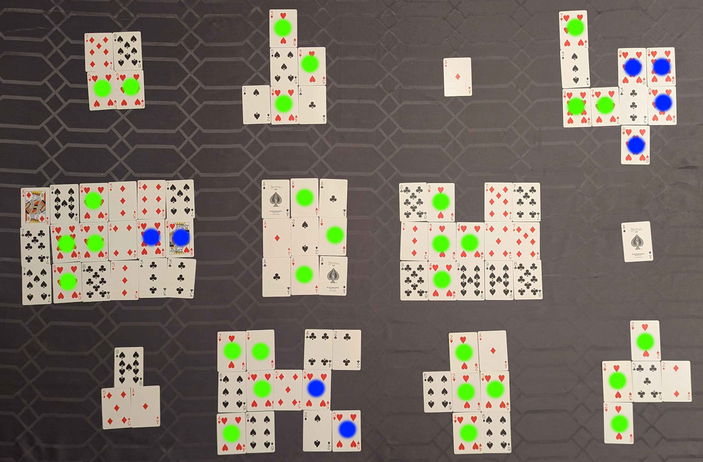

Based on the title, solvers should first look at the diamond cards in order (in row-major order per blob, then in row-major order overall). This gives 7AK3643A73575A5A2 - with a little bit of squinting, this can be parsed as 7AK3 643A73565 A5 A-2, or TAKE GREATESTS AS A-Z.
Next, solvers should look at the greatest card(s) in each blob and convert to A1Z26 (the second blob in the second row should help disambiguate aces as having a value of 1):
| 8 = H | 5 = E | 1 = A | 9+9 = R |
| 10+10 = T | 2 = B | 9+9 = R | 1 = A |
| 9 = I | 6+6 = L | 6+6 = L | 5 = E |
Now, solvers should read any heart cards in each row as braille (when there are two letters in one blob, the first has been marked in green and the second in blue):
The braille spells out COUNT CORNER SIZES.
The blobs in the corners have the sizes 4 9 3 5 which can once again be converted via A1Z26 to get the answer, DICE.